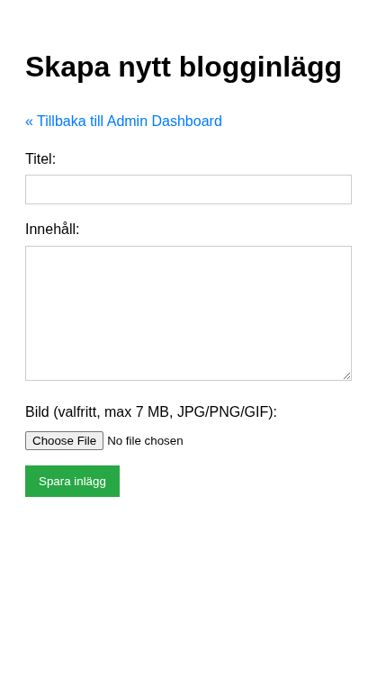
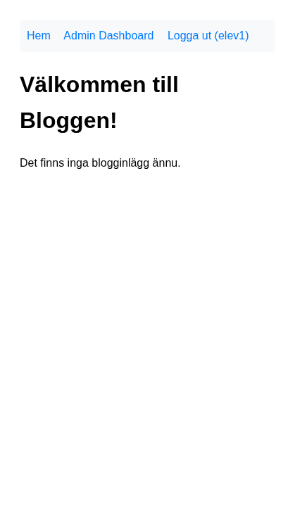

Del 3: Skapa och läsa inlägg
I denna del skapar vi formuläret för att skapa blogginlägg och sidorna för att visa dem – steg för steg. Förutsättning: Du har genomfört Del 2: Autentisering.
Vi börjar med att skapa inlägg utan bild, så att grundlogiken fungerar. Sedan lägger vi till bilduppladdning.
Steg 1: Förbered en enkel modell (includes/Post.php)
Innan vi går vidare med fler CRUD-steg skapar vi en enkel modellklass för inlägg. Modellen samlar SQL-frågorna på ett ställe.
Skapa includes/Post.php:
<?php
declare(strict_types=1);
class Post
{
public function __construct(private PDO $pdo)
{
}
public function create(int $userId, string $title, string $body, ?string $imagePath): int
{
$stmt = $this->pdo->prepare(
"INSERT INTO posts (user_id, title, body, image_path)
VALUES (:user_id, :title, :body, :image_path)"
);
$stmt->bindValue(':user_id', $userId, PDO::PARAM_INT);
$stmt->bindValue(':title', $title);
$stmt->bindValue(':body', $body);
$stmt->bindValue(':image_path', $imagePath, $imagePath === null ? PDO::PARAM_NULL : PDO::PARAM_STR);
$stmt->execute();
return (int) $this->pdo->lastInsertId();
}
public function showOne(int $id): array|false
{
$stmt = $this->pdo->prepare(
"SELECT posts.*, users.username
FROM posts
JOIN users ON posts.user_id = users.id
WHERE posts.id = :id"
);
$stmt->bindValue(':id', $id, PDO::PARAM_INT);
$stmt->execute();
return $stmt->fetch();
}
public function showAll(): array
{
$stmt = $this->pdo->query(
"SELECT posts.*, users.username
FROM posts
JOIN users ON posts.user_id = users.id
ORDER BY posts.created_at DESC"
);
return $stmt->fetchAll();
}
public function showAllByUser(int $userId): array
{
$stmt = $this->pdo->prepare(
"SELECT id, title, created_at, updated_at
FROM posts
WHERE user_id = :user_id
ORDER BY created_at DESC"
);
$stmt->bindValue(':user_id', $userId, PDO::PARAM_INT);
$stmt->execute();
return $stmt->fetchAll();
}
public function updateOne(int $id, int $userId, string $title, string $body, ?string $imagePath): bool
{
$stmt = $this->pdo->prepare(
"UPDATE posts
SET title = :title, body = :body, image_path = :image_path
WHERE id = :id AND user_id = :user_id"
);
$stmt->bindValue(':title', $title);
$stmt->bindValue(':body', $body);
$stmt->bindValue(':image_path', $imagePath, $imagePath === null ? PDO::PARAM_NULL : PDO::PARAM_STR);
$stmt->bindValue(':id', $id, PDO::PARAM_INT);
$stmt->bindValue(':user_id', $userId, PDO::PARAM_INT);
return $stmt->execute();
}
public function deleteOne(int $id, int $userId): bool
{
$stmt = $this->pdo->prepare("DELETE FROM posts WHERE id = :id AND user_id = :user_id");
$stmt->bindValue(':id', $id, PDO::PARAM_INT);
$stmt->bindValue(':user_id', $userId, PDO::PARAM_INT);
return $stmt->execute();
}
}
Nu kan vi använda samma modell i flera sidor, istället för att duplicera SQL i varje fil.
Steg 2: Skapa inlägg – utan bild
Steg 2.1: Grundläggande formulär
Skapa admin/create_post.php med session-skydd (som i Del 2) och ett enkelt formulär för titel och innehåll:
<?php
require_once '../includes/config.php';
if (!isset($_SESSION['user_id'])) {
header('Location: ../login.php?redirect=' . urlencode($_SERVER['REQUEST_URI']));
exit;
}
$logged_in_user_id = $_SESSION['user_id'];
require_once '../includes/database.php';
require_once '../includes/Post.php';
$errors = [];
$title = '';
$body = '';
$post_model = new Post(connect_db());
// POST-hantering kommer i nästa steg
?>
<!DOCTYPE html>
<html lang="sv">
<head>
<meta charset="UTF-8">
<meta name="viewport" content="width=device-width, initial-scale=1.0">
<title>Skapa nytt inlägg - Admin</title>
<style>
body { font-family: sans-serif; line-height: 1.6; padding: 20px; }
.form-group { margin-bottom: 15px; }
label { display: block; margin-bottom: 5px; }
input[type="text"], textarea {
width: 100%; padding: 8px; border: 1px solid #ccc; box-sizing: border-box;
}
textarea { min-height: 150px; }
button { padding: 10px 15px; background-color: #28a745; color: white; border: none; cursor: pointer; }
button:hover { background-color: #218838; }
.error-messages { color: red; margin-bottom: 15px; }
.error-messages ul { list-style: none; padding: 0; }
a { color: #007bff; text-decoration: none; }
a:hover { text-decoration: underline; }
</style>
</head>
<body>
<h1>Skapa nytt blogginlägg</h1>
<p><a href="index.php">« Tillbaka till Admin Dashboard</a></p>
<form action="create_post.php" method="post">
<div class="form-group">
<label for="title">Titel:</label>
<input type="text" id="title" name="title" value="<?php echo htmlspecialchars($title); ?>" required>
</div>
<div class="form-group">
<label for="body">Innehåll:</label>
<textarea id="body" name="body" required><?php echo htmlspecialchars($body); ?></textarea>
</div>
<button type="submit">Spara inlägg</button>
</form>
</body>
</html>
OBS: Länken “Tillbaka till Admin Dashboard” pekar på admin/index.php. Se till att du har en admin/index.php som visar något (t.ex. en rubrik “Admin Dashboard” och en länk till create_post.php).

Steg 2.2: Lägg till POST-hantering och spara i databasen
Nytt i detta steg: INSERT till posts-tabellen med user_id från sessionen.
Lägg till följande efter $body = ''; och före ?>:
if ($_SERVER['REQUEST_METHOD'] === 'POST') {
$title = trim($_POST['title'] ?? '');
$body = trim($_POST['body'] ?? '');
if (empty($title)) {
$errors[] = 'Titel är obligatoriskt.';
}
if (empty($body)) {
$errors[] = 'Innehåll är obligatoriskt.';
}
if (empty($errors)) {
try {
$post_model->create($logged_in_user_id, $title, $body, null);
header('Location: index.php?created=success');
exit;
} catch (PDOException $e) {
error_log("Create Post Error: " . $e->getMessage());
$errors[] = 'Databasfel. Kan inte spara inlägg just nu.';
}
}
}
Lägg också till felvisning ovanför formuläret:
<?php if (!empty($errors)): ?>
<div class="error-messages">
<strong>Inlägget kunde inte sparas:</strong>
<ul>
<?php foreach ($errors as $error): ?>
<li><?php echo htmlspecialchars($error); ?></li>
<?php endforeach; ?>
</ul>
</div>
<?php endif; ?>
Testa att skapa ett inlägg. Du ska omdirigeras till admin/index.php (som ännu inte visar inläggen – det kommer i steg 4).
Du har nu lärt dig: Att spara data till en tabell med foreign key (user_id), och att använda PDO::PARAM_NULL för NULL-värden.
Mini-exempel: Vad finns i $_FILES?
Innan vi lägger till bilduppladdning – se vad PHP faktiskt får. Skapa tillfälligt test_upload.php:
<!DOCTYPE html>
<html><body>
<form method="post" enctype="multipart/form-data">
<input type="file" name="image" accept="image/*">
<button type="submit">Skicka</button>
</form>
<?php
if ($_SERVER['REQUEST_METHOD'] === 'POST') {
echo "<pre>";
print_r($_FILES['image'] ?? 'Ingen fil');
echo "</pre>";
}
?>
</body></html>
Ladda upp en bild och klicka Skicka. Du ser: name (originalfilnamn), type (t.ex. image/jpeg), size (bytes), tmp_name (temporär sökväg) och error (0 = OK). tmp_name är den temporära filen – den försvinner när skriptet slutar. Därför använder vi move_uploaded_file() för att flytta den till uploads/ innan vi sparar sökvägen i databasen.
Steg 3: Lägg till bilduppladdning
Nu när grundfunktionen fungerar lägger vi till möjlighet att ladda upp en bild till varje inlägg.
Vad behövs för filuppladdning?
enctype="multipart/form-data"i formuläret – annars skickas inte filer.$_FILES– innehåller information om uppladdade filer (du såg strukturen i mini-exemplet ovan).move_uploaded_file()– flyttar filen från temporär mapp till dinuploads/-mapp.
Steg 3.1: Uppdatera formuläret
Ändra <form>-taggen till:
<form action="create_post.php" method="post" enctype="multipart/form-data">
Lägg till bildfältet före submit-knappen:
<div class="form-group">
<label for="image">Bild (valfritt, max 7 MB, JPG/PNG/GIF):</label>
<input type="file" id="image" name="image" accept="image/jpeg, image/png, image/gif">
</div>
Steg 3.2: Hantera uppladdad bild i POST-blocket
Försök själv: Vad finns i $_FILES['image'] när en fil laddas upp? Tänk på: error, tmp_name, name, type, size.
Lägg till bildhanteringen inne i POST-blocket, efter valideringen av titel och body men före if (empty($errors)). Ersätt också INSERT-delen så att image_path används:
if ($_SERVER['REQUEST_METHOD'] === 'POST') {
$title = trim($_POST['title'] ?? '');
$body = trim($_POST['body'] ?? '');
$image = $_FILES['image'] ?? null;
$image_path = null;
if (empty($title)) {
$errors[] = 'Titel är obligatoriskt.';
}
if (empty($body)) {
$errors[] = 'Innehåll är obligatoriskt.';
}
// Bildhantering
if ($image && $image['error'] === UPLOAD_ERR_OK) {
$allowed_types = ['image/jpeg', 'image/png', 'image/gif'];
$max_size = 7 * 1024 * 1024; // 7 MB
if (!in_array($image['type'], $allowed_types)) {
$errors[] = 'Ogiltig filtyp. Endast JPG, PNG och GIF är tillåtna.';
} elseif ($image['size'] > $max_size) {
$errors[] = 'Filen är för stor. Maxstorlek är 7 MB.';
} else {
$file_extension = pathinfo($image['name'], PATHINFO_EXTENSION);
$unique_filename = uniqid('post_img_', true) . '.' . $file_extension;
$destination = UPLOAD_PATH . $unique_filename;
if (move_uploaded_file($image['tmp_name'], $destination)) {
$image_path = 'uploads/' . $unique_filename;
} else {
$errors[] = 'Kunde inte ladda upp bilden. Kontrollera mapprättigheter.';
}
}
} elseif ($image && $image['error'] !== UPLOAD_ERR_NO_FILE) {
$errors[] = 'Ett fel uppstod vid bilduppladdning. Felkod: ' . $image['error'];
}
if (empty($errors)) {
try {
$post_model->create($logged_in_user_id, $title, $body, $image_path);
header('Location: index.php?created=success');
exit;
} catch (PDOException $e) {
error_log("Create Post Error: " . $e->getMessage());
$errors[] = 'Databasfel. Kan inte spara inlägg just nu.';
if ($image_path && file_exists(UPLOAD_PATH . basename($image_path))) {
unlink(UPLOAD_PATH . basename($image_path));
}
}
}
}
Förklaring: UPLOAD_PATH definieras i config.php (Del 1). uniqid() ger unika filnamn så att filer inte skriver över varandra. Om databasen misslyckas efter att bilden sparats tar vi bort bilden med unlink().

Du har nu lärt dig: Filuppladdning med $_FILES, move_uploaded_file(), validering av filtyp och storlek, och att spara relativ sökväg i databasen.
Mini-exempel: Varför JOIN?
posts har user_id, men inte användarnamnet. Du kan antingen:
- Många frågor: Hämta alla posts, loopa och göra
SELECT username FROM users WHERE id = ?för varje inlägg – N+1 frågor. - JOIN: En fråga som säger “Ge mig posts och användarnamnet från users där posts.user_id = users.id”.
En fråga istället för många – snabbare och enklare. Vi använder JOIN i både index och post-sidan.
Steg 4: Lista alla inlägg (index.php)
Startsidan ska visa alla blogginlägg. Vi skapar den i roten av projektet (samma nivå som login.php).
Steg 4.1: Hämta data från databasen
Skapa eller uppdatera index.php i projektroten:
<?php
require_once 'includes/config.php';
require_once 'includes/database.php';
$posts = [];
$fetch_error = null;
try {
$post_model = new Post(connect_db());
$posts = $post_model->showAll();
} catch (PDOException $e) {
error_log("Index Page Error: " . $e->getMessage());
$fetch_error = "Kunde inte hämta blogginlägg just nu. Försök igen senare.";
}
?>
Nytt i detta steg: JOIN för att hämta författarens användarnamn tillsammans med inlägget. ORDER BY created_at DESC visar senaste först.
Steg 4.2: Visa inläggen i HTML
Lägg till HTML-delen med navigering och listan:
<!DOCTYPE html>
<html lang="sv">
<head>
<meta charset="UTF-8">
<meta name="viewport" content="width=device-width, initial-scale=1.0">
<title>Enkel Blogg</title>
<style>
body { font-family: sans-serif; line-height: 1.6; padding: 20px; }
.post-summary { border: 1px solid #eee; padding: 15px; margin-bottom: 20px; }
.post-summary h2 { margin-top: 0; }
.post-meta { font-size: 0.9em; color: #666; margin-bottom: 10px; }
.post-image-list { max-width: 150px; max-height: 100px; float: right; margin-left: 15px; }
nav { margin-bottom: 20px; background-color: #f8f9fa; padding: 10px; border-radius: 5px; }
nav a { margin-right: 15px; text-decoration: none; color: #007bff; }
nav a:hover { text-decoration: underline; }
.error-message { color: red; border: 1px solid red; padding: 10px; margin-bottom: 20px; }
.success-message { color: green; border: 1px solid green; padding: 10px; margin-bottom: 20px; }
</style>
</head>
<body>
<nav>
<a href="index.php">Hem</a>
<?php if (isset($_SESSION['user_id'])): ?>
<a href="admin/index.php">Admin Dashboard</a>
<a href="logout.php">Logga ut (<?php echo htmlspecialchars($_SESSION['username']); ?>)</a>
<?php else: ?>
<a href="login.php">Logga in</a>
<a href="register.php">Registrera dig</a>
<?php endif; ?>
</nav>
<h1>Välkommen till Bloggen!</h1>
<?php if (isset($_GET['logged_out']) && $_GET['logged_out'] === 'success'): ?>
<p class="success-message">Du har loggats ut.</p>
<?php endif; ?>
<?php if ($fetch_error): ?>
<p class="error-message"><?php echo htmlspecialchars($fetch_error); ?></p>
<?php elseif (empty($posts)): ?>
<p>Det finns inga blogginlägg ännu.</p>
<?php else: ?>
<?php foreach ($posts as $post): ?>
<article class="post-summary">
<?php if (!empty($post['image_path'])): ?>
<img src="<?php echo htmlspecialchars(BASE_URL . '/' . $post['image_path']); ?>"
alt="Inläggsbild" class="post-image-list">
<?php endif; ?>
<h2><?php echo htmlspecialchars($post['title']); ?></h2>
<div class="post-meta">
Publicerad: <?php echo date('Y-m-d H:i', strtotime($post['created_at'])); ?>
av <?php echo htmlspecialchars($post['username']); ?>
</div>
<p>
<?php
$summary = htmlspecialchars($post['body']);
if (strlen($summary) > 200) {
$summary = substr($summary, 0, 200) . '...';
}
echo nl2br($summary);
?>
</p>
<a href="post.php?id=<?php echo $post['id']; ?>">Läs mer »</a>
<div style="clear: both;"></div>
</article>
<?php endforeach; ?>
<?php endif; ?>
</body>
</html>


Du har nu lärt dig: JOIN för att hämta relaterad data, fetchAll() för flera rader, substr() och nl2br() för textvisning.
Steg 5: Visa enskilt inlägg (post.php)
När användaren klickar “Läs mer” ska de se hela inlägget. Sidan tar emot id via URL:en (post.php?id=3).
Steg 5.1: Hämta ID och validera
Försök själv: Varför är det farligt att använda $_GET['id'] direkt i en SQL-fråga? Hur kan filter_input(INPUT_GET, 'id', FILTER_VALIDATE_INT) hjälpa?
Skapa post.php:
<?php
require_once 'includes/config.php';
require_once 'includes/database.php';
require_once 'includes/Post.php';
$post_id = filter_input(INPUT_GET, 'id', FILTER_VALIDATE_INT);
$post = null;
$fetch_error = null;
if ($post_id === false || $post_id <= 0) {
$fetch_error = "Ogiltigt inläggs-ID.";
} else {
try {
$post_model = new Post(connect_db());
$post = $post_model->showOne($post_id);
if (!$post) {
$fetch_error = "Inlägget hittades inte.";
}
} catch (PDOException $e) {
error_log("View Post Error (ID: $post_id): " . $e->getMessage());
$fetch_error = "Kunde inte hämta blogginlägget just nu.";
}
}
?>
Steg 5.2: Visa inlägget
Lägg till HTML-delen (med samma <nav> som index.php):
<!DOCTYPE html>
<html lang="sv">
<head>
<meta charset="UTF-8">
<meta name="viewport" content="width=device-width, initial-scale=1.0">
<title><?php echo $post ? htmlspecialchars($post['title']) : 'Inlägg'; ?> - Enkel Blogg</title>
<style>
body { font-family: sans-serif; line-height: 1.6; padding: 20px; }
.post-content { margin-top: 20px; }
.post-meta { font-size: 0.9em; color: #666; margin-bottom: 10px; }
.post-image-full { max-width: 100%; height: auto; margin-bottom: 20px; }
nav { margin-bottom: 20px; background-color: #f8f9fa; padding: 10px; border-radius: 5px; }
nav a { margin-right: 15px; text-decoration: none; color: #007bff; }
nav a:hover { text-decoration: underline; }
.error-message { color: red; border: 1px solid red; padding: 10px; margin-bottom: 20px; }
</style>
</head>
<body>
<nav>
<a href="index.php">Hem</a>
<?php if (isset($_SESSION['user_id'])): ?>
<a href="admin/index.php">Admin Dashboard</a>
<a href="logout.php">Logga ut (<?php echo htmlspecialchars($_SESSION['username']); ?>)</a>
<?php else: ?>
<a href="login.php">Logga in</a>
<a href="register.php">Registrera dig</a>
<?php endif; ?>
</nav>
<?php if ($fetch_error): ?>
<p class="error-message"><?php echo htmlspecialchars($fetch_error); ?></p>
<?php elseif ($post): ?>
<article class="post-content">
<h1><?php echo htmlspecialchars($post['title']); ?></h1>
<div class="post-meta">
Publicerad: <?php echo date('Y-m-d H:i', strtotime($post['created_at'])); ?>
av <?php echo htmlspecialchars($post['username']); ?>
<?php if ($post['created_at'] !== $post['updated_at']): ?>
(Senast ändrad: <?php echo date('Y-m-d H:i', strtotime($post['updated_at'])); ?>)
<?php endif; ?>
</div>
<?php if (!empty($post['image_path'])): ?>
<img src="<?php echo htmlspecialchars(BASE_URL . '/' . $post['image_path']); ?>"
alt="<?php echo htmlspecialchars($post['title']); ?>" class="post-image-full">
<?php endif; ?>
<div><?php echo nl2br(htmlspecialchars($post['body'])); ?></div>
</article>
<p><a href="index.php">« Tillbaka till alla inlägg</a></p>
<?php endif; ?>
</body>
</html>

Du har nu lärt dig: filter_input() för säker validering av GET-parametrar, prepared statements med bindParam för SELECT, och att hantera fall där inlägget inte hittas.
Föregående: Del 2: Autentisering | Nästa: Del 4: Uppdatera och radera